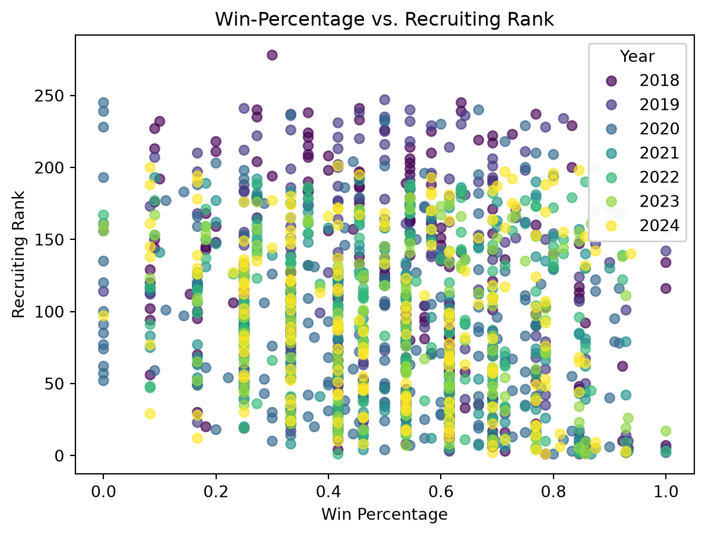

Data Acquisition: How to Use College Football APIs
Author
Hailey Peterson
Published
November 13, 2026
Introduction - Motivation
Every recruiting cycle, NCAA Division I athletic departments pour hundreds of thousands and upwards of millions of dollars into high school talent acquisition. With the recent explosion of Name, Image, and Likeness (NIL) collectives and transfer portal dynamics, the financial stakes of securing elite recruits have never been higher, even at the risk of nearly bankrupting schools. Alumni and athletic directors pour immense capital into getting four or five star high school prospects with a single expectation: getting wins on Saturdays. But does an elite recruiting class reliably translate into regular-season success? Or do coaching schemes, development, transfer acquisitions, and conference membership dilute the power of raw high school talent? To investigate this question empirically, I curated an original multi-season dataset from 2018 to 2024. By combining historical recruiting composite rankings with seasonal win-loss records, this project explores the relationship between high school recruiting ranks and actual on-field winning percentage across FBS and FCS.
Ethical Considerations
CFBD provides free academic and hobbyist API keys to anyone who registers with their email. However, their official CFBD Terms of Use establish clear guidelines regarding security and redistribution. To sum up the terms, raw data outputs are prohibited from being a standalone download (i.e., no uploading the data to GitHub), API keys must remain confidential and should never be committed to GitHub, and automated scripts must respect server capacity (i.e., use a timer to space the calls to the server to not overload).
To comply with these guidelines, I kept all API authentication tokens isolated in a local .env configuration file, which is permanently excluded via .gitignore. Furthermore, my collection pipeline incorporates explicit time.sleep(0.5) intervals between requests to maintain respectful server traffic.
The Acquisition Pipeline: How to Get Started
To begin, go to CollegeFootballData API where you can submit your email to get your personalized API key. The email should come through immediately. Once you have your API key you can begin!
If you want to assemble a similar sports dataset for your own research, you do not need complex web scrapers. The CFBD REST interface provides clean, structured JSON endpoints that can be fetched using Python’s requests library and normalized directly with pandas.
You can review the full, reproducible collection pipeline in the project’s GitHub Repository (specifically within scripts/acquire_data.py). Here is the core programmatic pattern used to retrieve and unpack recruiting rankings:
import osimport pandas as pdimport requests# load API key securely from environment variablesapi_key = os.getenv("CFBD_API_KEY")headers = {"Authorization": f"Bearer {api_key}"}# request recruiting data for a target season (year)url ="[https://api.collegefootballdata.com/recruiting/teams](https://api.collegefootballdata.com/recruiting/teams)"params = {"year": 2023}response = requests.get(url, headers=headers, params=params)if response.status_code ==200:# flatten nested JSON into a clean tabular DataFrame recruiting_df = pd.json_normalize(response.json())print(recruiting_df[["team", "points", "rank"]].head())
Scaling and Merging Across Seasons
In the acquire_data.qmd script, this pattern is scaled across target years (2018-2024) in two distinct phases:
Iterative Batch Retrieval: A for loop queries /recruiting/teams for each season, then append each year’s batch to a list before stacking them vertically with pd.concat(). A secondary loop pulls the win-loss records from the /records endpoint.
Feature Engineering and Merging: Because the raw records endpoint returns separate counts for total games and wins, I computed win percentage as win_pct = wins / games. Then school names were standardized and the two tables were joined using pd.merge() on composite keys ['team', 'year'] with relational validation (validate = 'many_to_one').
The Curated Dataset
The resulting curated dataset brings together 1384 total observations across 7 collegiate seasons. Each row represents a unique team and season and includes 6 key features:
Season regular-season winning percentage (0.000 to 1.000)
Across the 1384 observations, the mean national win percentage is about 0.51.
Exploratory Data Analysis & Findings
With our dataset assembled, we can evaluate how strongly high school recruiting power correlates with collegiate victory. The code and data can be accessed directly from the project repository’s eda.qmd file.
1. Visualizing the Global Trend
import pandas as pdimport numpy as npimport matplotlib.pyplot as plt# load in the datadata = pd.read_csv("data/college_football.csv")clean_data = data.dropna(subset=["win_pct", "recruiting_rank", "year"])# plot of win pct vs recruiting rankfig, ax = plt.subplots()scatter = ax.scatter(clean_data["win_pct"], clean_data["recruiting_rank"], c=clean_data["year"].astype(int), alpha =0.65)ax.set(xlabel="Win Percentage", ylabel="Recruiting Rank", title="Win-Percentage vs. Recruiting Rank")legend1 = ax.legend(*scatter.legend_elements(), title="Year")ax.add_artist(legend1)plt.show()

Because a rank of 1 denotes the nation’s premier recruiting class, a strong positive relationship between recruiting talent and victory should appear as a downward slope (lower rank number producing higher win percentage). The plot reveals a general downward trajectory, but with substantial spread where many mid-tier recruiting classes (ranks 40–80) still achieve 8 to 10 win seasons.
2. Year-by-Year Correlation
To quantify this relationship across time, we calculate the correlation coefficient between win_pct and recruiting_rank grouped by season:
# correlation between win percentage and recruiting rank# in theory we should see a negative correlation (higher rank corresponds to lower number)## see if there is difference by yearyear_corr = ( data.groupby("year") .apply(lambda g: g["win_pct"].corr(g["recruiting_rank"]), include_groups=False, ) .reset_index(name="corr"))# print outputprint(year_corr)
Based on the year by year correlations, each year sees a weak negative correlation. This means that as the rank number increases (worse rank), the win percentage generally goes down. 2020 sees the weakest correlation of -0.101, but that could be due to this being the Covid year and so the seasons were shorter and structured differently than other years.
3. The Conference Divide: Talent vs. Execution
Does raw recruiting talent matter equally across all conferences? In college athletics, strength of schedule and resource disparities vary widely. Grouping by conference reveals dramatic contrasts:
## look how it works within conferencesconf_corr = ( data.groupby("conference") .apply(lambda g: g["win_pct"].corr(g["recruiting_rank"]), include_groups=False, ) .reset_index(name="corr"))# print outputprint(conf_corr)
conference corr
0 ACC -0.187669
1 AWC 0.755929
2 American Athletic -0.331176
3 Atlantic Sun 0.616705
4 Big 12 -0.385964
5 Big Sky 0.037454
6 Big South -0.303120
7 Big South-OVC 0.573773
8 Big Ten -0.457007
9 CAA -0.291132
10 Coastal Athletic 0.130414
11 Conference USA -0.078195
12 FBS Independents -0.570091
13 FCS Independents 0.187124
14 GLIAC -0.709571
15 Ivy -0.391074
16 MEAC 0.425694
17 MVFC -0.062702
18 Mid-American -0.056047
19 Mountain West -0.213046
20 NEC -0.796666
21 OVC 0.208055
22 Pac-12 -0.264368
23 Patriot -0.083129
24 Pioneer -0.437985
25 SEC -0.540961
26 SWAC -0.217015
27 Southern -0.001212
28 Southland -0.135599
29 Sun Belt -0.175945
30 UAC 0.048077
31 Western Athletic 0.116991
In power conferences like the SEC (-0.54) and Big Ten (-0.46), recruiting rank is a heavy predictor of success. Within these conferences, elite rosters routinely dominate lower-recruiting peers in trenches and depth.
Conversely, several mid-major and FCS conferences display weak or even slightly positive correlations. In leagues where team recruiting budgets are uniformly modest, coaching continuity, veteran experience, and scheme often matter far more than small differences in star ratings.
The Monopolistic Top 10
Examining the extremes of the dataset highlights college football’s talent consolidation:
The Top 10: Across 7 seasons (70 possible top-10 slots), only 17 unique schools ever appeared in the top 10 recruiting rankings. Furthermore, these 17 programs represent only 4 conferences (heavily dominated by the SEC and Big Ten). Programs like Alabama, Georgia, Ohio State, and Texas effectively lock down the talent pipeline year after year.
The Bottom 10: Across the lowest-ranked recruiting classes, we find 57 unique teams spanning 18 conferences.
This asymmetry shows that while elite talent acquisition is a tightly guarded monopoly with immense barriers to entry, the bottom of the recruiting hierarchy is volatile and widely dispersed.
Conclusion & Next Steps
This project illustrates the mechanics of taking a real-world question, verifying ethical API boundaries, constructing an automated retrieval script, and analyzing the resulting data.
While securing a top-10 recruiting class nearly guarantees your team will be competitive, it is not the whole story. Coaching turnover, injuries, transfer portal additions and losses, and game-day luck account for the rest of the story.
Resources & Further Reading
Code Repository: Access the pipeline scripts, environment templates, and data cleaning routines at my Data Acquisition GitHub Repository.
API Documentation: Learn more about collegiate metrics and register for a developer key at CollegeFootballData.com.
Explore Further: Try adapting the pipeline script to pull the /stats/season endpoint to see whether offensive yards per play or turnover margin correlates more strongly with wins than high school recruiting scores!